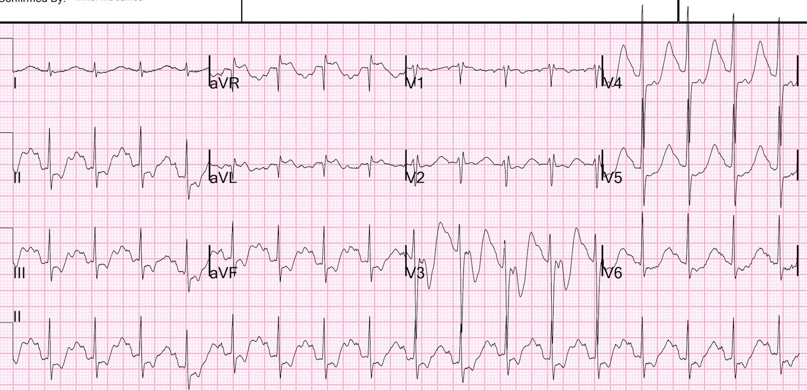
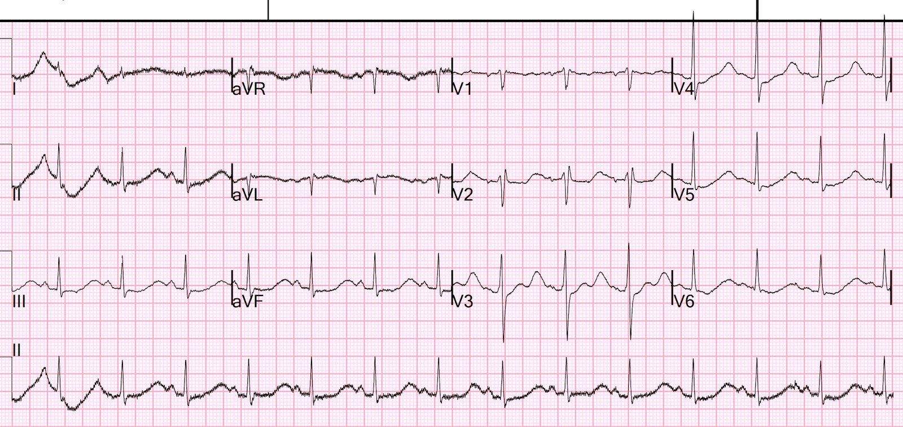
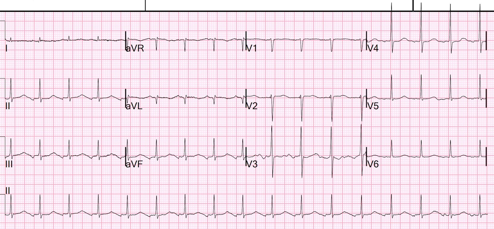
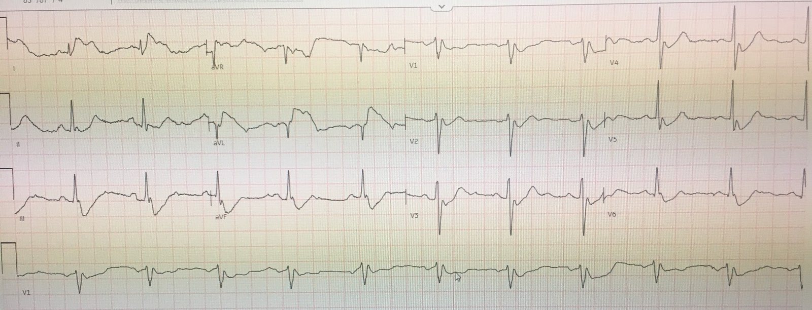
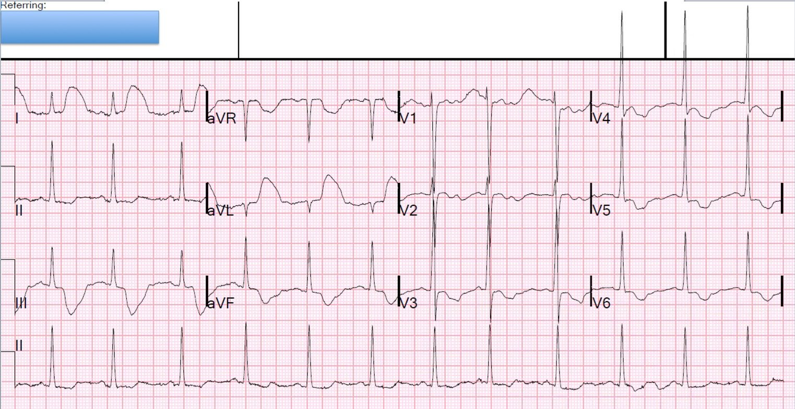
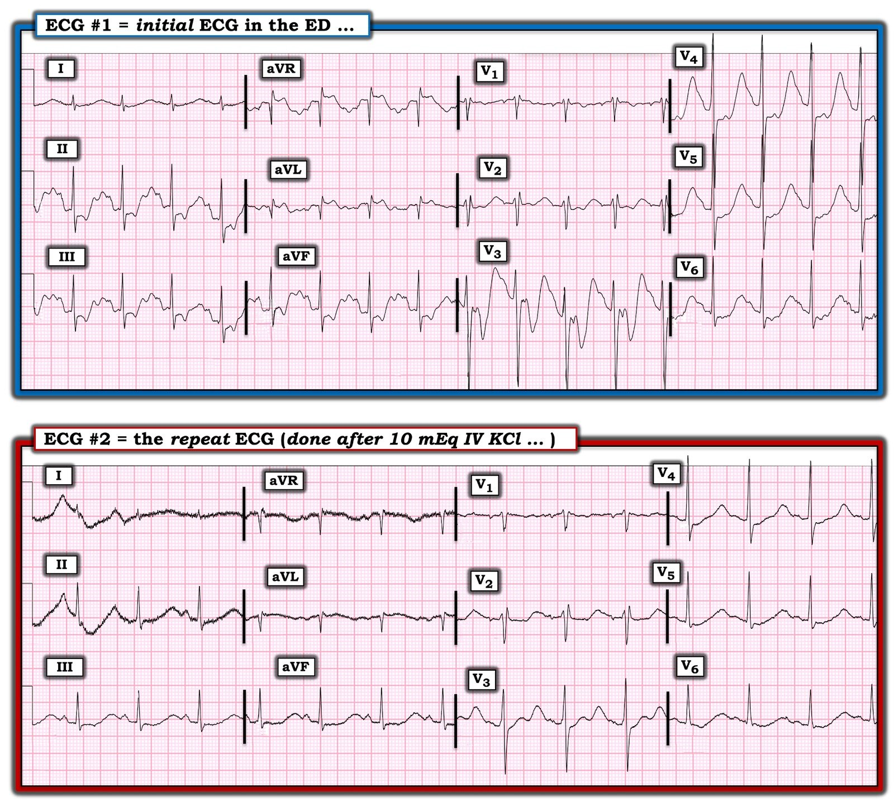
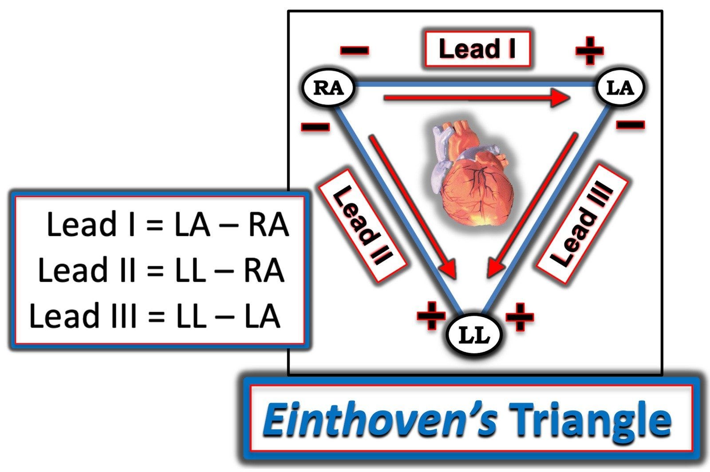
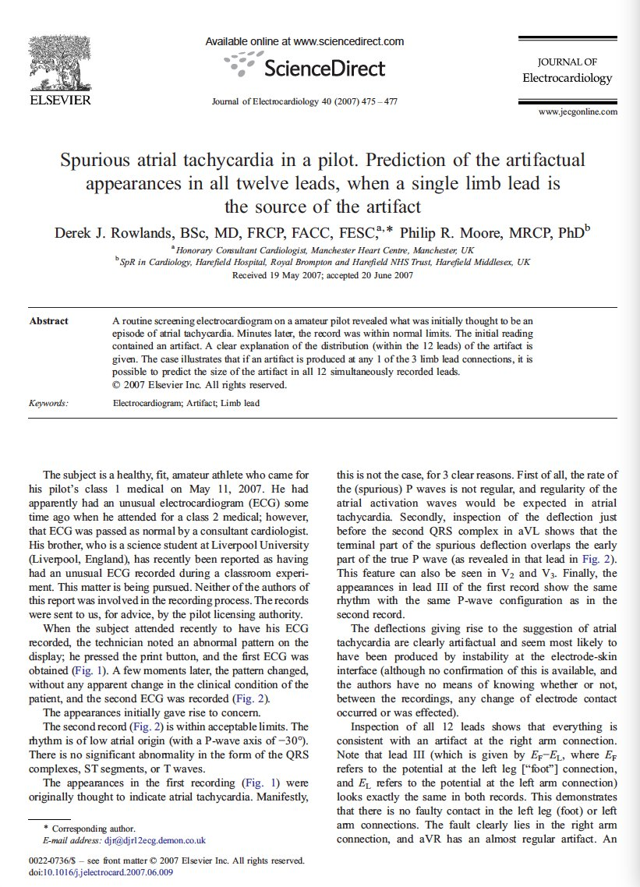
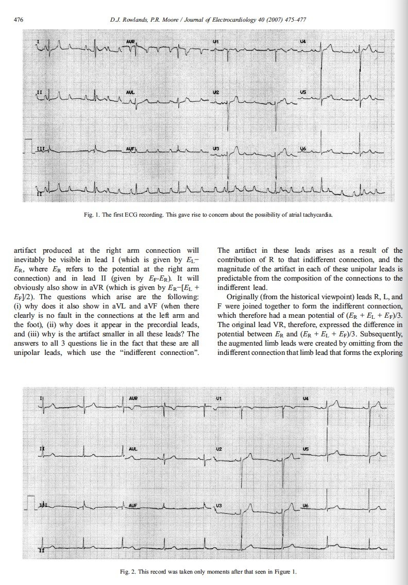
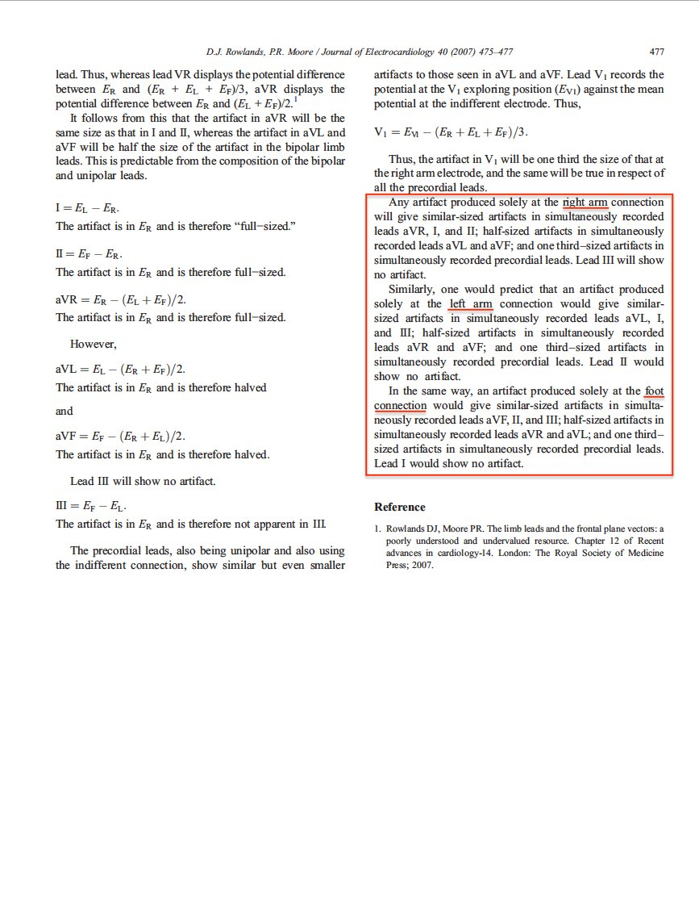

08/11/2022 — Người ta cho tôi xem điện tâm đồ này mà không kèm bất kỳ thông tin nào. Bạn nghĩ sao?
Bản dịch tiếng Việt của bài "I was shown this ECG without any information. What do you think?" – Dr. Smith’s ECG Blog. Giữ nguyên toàn bộ 11 hình ảnh của bản gốc.
Người ta cho tôi xem điện tâm đồ này; “Steve, anh nghĩ sao về cái này?”:


Chuyện gì đang xảy ra?
Tôi nói: “Đây là nhiễu do mạch đập (pulse tapping artifact) và QT dài”
Vì sao tôi nói vậy?
Bất cứ khi nào bạn thấy một điện tâm đồ rất kỳ dị, bạn nên nghĩ đến nhiễu do mạch đập. Đây là khi một trong các điện cực chuyển đạo chi được đặt lên trên một động mạch, đặc biệt là khi đặt lên trên một cầu nối động-tĩnh mạch (fistula) chạy thận.
Khi bạn nghi ngờ điều này, việc tiếp theo của bạn là tìm một chuyển đạo duy nhất trong số các chuyển đạo I, II và III KHÔNG kỳ dị.
Chuyển đạo I trên điện tâm đồ này không kỳ dị [mặc dù nó có cho thấy QT (hay QU) rất dài].
Chuyển đạo I được tạo bởi điện cực tay phải và tay trái.
Chuyển đạo II bởi điện cực tay phải và chân trái
Chuyển đạo III bởi điện cực tay trái và chân trái
Vì vậy, nếu chuyển đạo I không kỳ dị (như trong ca này), thì các điện cực KHÔNG bị ảnh hưởng là điện cực tay phải và tay trái.
Do đó, điện cực chân trái được đặt lên trên một động mạch.
“Chuyển đạo tăng thế” (aVR, aVL, aVF): tất cả các chuyển đạo này đều phụ thuộc vào cực trung tâm Wilson (Wilson’s Central Terminal), là trung bình của các chuyển đạo I, II và III.
Chuyển đạo trước tim: các chuyển đạo này dùng các chuyển đạo chi làm điểm tham chiếu (grounding), nên tất cả chúng cũng đều bị ảnh hưởng bởi một chuyển đạo chi bất thường.
Do đó, có tới 11 trong số 12 chuyển đạo có thể trông kỳ dị.
Giải pháp: ghi lại điện tâm đồ, nhưng di chuyển điện cực chân trái.
Nhiễu do mạch đập đã không được nhận ra.
Bệnh nhân đã đến khoa cấp cứu (ED) vì khó thở (SOB), nhưng không hề đau ngực. Ông ấy bị mệt mỏi và yếu sức tăng dần trong 3 tuần. Ông ấy đã sụt 10 pound cân nặng.
Ông ấy được chuyển đến khu hồi sức vì điện tâm đồ của mình.
Kali của ông ấy trả về là 1.3 mEq/L!
Đã bắt đầu truyền tĩnh mạch 10 mEq KCl vào thời điểm 35 phút sau điện tâm đồ đầu tiên.
Ở phút thứ 44, một điện tâm đồ khác được ghi. Các điện cực của điện tâm đồ đầu tiên đã bị tháo ra, nên các điện cực được đặt ở một vị trí khác một cách tình cờ, không cố ý:


Bây giờ nó chỉ trông giống hạ kali máu nặng. Có hình ảnh “gợn sóng”. Xem ở đây để có nhiều ví dụ về hình ảnh “gợn sóng” (wavy) của hạ kali máu.
Có hình ảnh trông như QT dài, nhưng không phải. Hãy nhìn chuyển đạo V3. Có 2 sóng sau QRS. Sóng đầu tiên là sóng T (không có QT dài); sóng thứ 2 là một sóng U khổng lồ do hạ kali máu. Nếu bạn dóng từ sóng U này xuống chuyển đạo II (dải dưới cùng), bạn sẽ nhận ra rằng thứ bạn tưởng là sóng T ở chuyển đạo II thực ra là sóng U. QT dài thực ra là QU. Bạn có thể thấy rằng tất cả các “QT dài” ở mọi chuyển đạo thực ra đều là sóng QU.
Đây là điều tôi hay nói: “Khi QT trông dài đến mức không thể tin được, thì có lẽ đó là QU.
Khoa tim mạch được mời hội chẩn về các điện tâm đồ này và họ lo ngại về ST chênh xuống và ST chênh lên rất lớn. Tôi tình cờ gặp bác sĩ tim mạch ở hành lang và nói với anh ấy: “Không, đây là nhiễu do mạch đập.” Anh ấy rất cảm kích khi được biết về điều này.
Bệnh nhân đã được làm siêu âm tim “khẩn” (stat):
EF trước đây = 54% cách đây 2 năm
–Kích thước buồng thất trái bình thường, độ dày thành bình thường và rối loạn chức năng tâm thu thất trái mức độ vừa.
–Phân suất tống máu thất trái ước tính là 37 %.
–Giảm động toàn bộ, có thể kèm rối loạn vận động thành khu trú-thành dưới & dưới bên
So với siêu âm tim tháng 10/2020, đã có thay đổi đáng kể trong khoảng thời gian này:
1. Phân suất tống máu đã xấu đi
2. Rối loạn vận động thành (WMA) có thể có ở thành dưới và dưới-bên là mới
Sáng hôm sau, K đã tăng lên 2.3 mEq/L:


Nó đang bình thường hóa
Troponin đạt đỉnh 42 ng/L (giới hạn trên tham chiếu (URL) = 34 ng/L). Đây không phải là nhồi máu cơ tim dưới bất kỳ dạng nào.
Những điểm cần học:
1. Khi điện tâm đồ trông kỳ dị, hãy nghĩ đến nhiễu do mạch đập
2. Nhận ra hình ảnh “gợn sóng” của hạ kali máu
3. Khi bạn nghĩ đến nhiễu do mạch đập, hãy tìm chuyển đạo trong số I, II hoặc III KHÔNG kỳ dị.
4. Khi QT trông dài đến mức không thể tin được, thì có lẽ đó là QU. Hãy tìm sóng U và đo kali để phát hiện hạ kali máu.
Các ca khác về nhiễu do mạch đập:
Acute chest pain and a bizarre ECG (Đau ngực cấp và một điện tâm đồ kỳ dị)


Bizarre (Hyperacute??) T-waves (Sóng T kỳ dị (tối cấp??))


Đừng bỏ lỡ những nhận xét xuất sắc của Ken Grauer về “Sự cố kỹ thuật” ở bên dưới!!

===================================
BÌNH LUẬN CỦA TÔI, bởi KEN GRAUER, MD (8/11/2022):
===================================
Ngoài chẩn đoán sắc sảo của Dr. Smith về “nhiễu do mạch đập (Pulse-Tapping Artifact)” — 2 điện tâm đồ đầu tiên trong ca hôm nay còn có một vài “sự cố kỹ thuật” khác. Để cho rõ — tôi đã đặt 2 điện tâm đồ này cạnh nhau trong Hình 1.
- THỬ THÁCH: Bạn có thể nhận ra được bao nhiêu “sự cố kỹ thuật” trong số này?


“Sự cố kỹ thuật” trong ca hôm nay:
Dr. Smith đã nêu bật trong phần bàn luận ở trên cách nhận ra ngay lập tức hiện tượng mạch đập (pulse-tapping). Cũng như trong một số ca về hiện tượng này mà ông trích dẫn từ các bài trước trên Dr. Smith’s ECG Blog (tức là từ bài ngày 26 tháng Tám năm 2022 và từ bài ngày 30 tháng Một năm 2018) — chính sự phân bố của các sóng lệch ST-T kỳ dị ở các chuyển đạo chi, vốn tuân theo chính xác vị trí và mức độ biến dạng biên độ tương đối mà tam giác Einthoven (Einthoven’s Triangle) dự đoán, là điều giúp nhận ra hiện tượng này ngay lập tức.
- Để giúp hình dung các mối liên hệ điện học mà Dr. Smith nêu ở trên — tôi đã thêm Hình 2 bên dưới. Như Dr. Smith đã nói — việc sóng ST-T ở chuyển đạo I của điện tâm đồ #1 không biểu hiện bất kỳ biến dạng nhiễu nào loại trừ sự tham gia của RA (tay phải — Right Arm) và LA (tay trái — Left Arm) vào “sự cố” kỹ thuật này — do đó quy cho LL (chân trái — Left Leg) là chi “thủ phạm“ gây ra nhiễu.
- Theo tam giác Einthoven — phát hiện trên điện tâm đồ #1 rằng biên độ nhiễu lớn nhất nằm ở chuyển đạo aVF (so với biên độ nhiễu ở 2 chuyển đạo tăng thế còn lại = aVR và aVL) đơn cực — khẳng định rằng điện cực LL (được đặt ở bàn chân trái) là chi “thủ phạm“.


LƯU Ý: Tôi đăng lại trong PHẦN BỔ SUNG bên dưới (ở Hình 3, –4 và –5 ) — bài báo 3 trang của Rowlands và Moore (J. Electrocardiology 40: 475-477, 2007) — đây là bài tổng quan HAY NHẤT mà tôi từng thấy về cơ chế sinh lý giải thích kích thước tương đối của các sóng lệch do nhiễu khi nguyên nhân gây nhiễu xuất phát từ một chi duy nhất.
- Như đã nêu qua các phương trình ở trang 477 trong bài báo của Rowlands và Moore: i) Biên độ nhiễu là lớn nhất ở điện cực tăng thế đơn cực của chi “thủ phạm” — tức là chuyển đạo aVF trên điện tâm đồ #1; và, ii) Biên độ nhiễu ở 2 chuyển đạo tăng thế còn lại (tức là chuyển đạo aVR và aVL) vào khoảng 1/2 biên độ nhiễu ở chuyển đạo aVF. Các kích thước nhiễu tương đối này thực sự phù hợp với biên độ biến dạng sóng ST-T thấy trên điện tâm đồ #1.
- Rowlands và Moore còn nhấn mạnh rằng biên độ các sóng lệch do nhiễu ở 6 chuyển đạo ngực đơn cực (dựa trên phương trình được nêu ở cột trên bên phải của trang 477) — lẽ ra chỉ vào khoảng bằng 1/3 kích thước của biến dạng nhiễu lớn nhất thấy ở các chuyển đạo II, III và aVF.
- LƯU Ý: Việc bản ghi chuyển đạo V3 trên điện tâm đồ #1 đặc biệt kỳ dị (với nhiễu sóng ST-T ở chuyển đạo này rõ ràng được phóng đại nhiều hơn hẳn so với mức tăng 1/3 dự kiến do biến dạng nhiễu) — gợi ý rằng có nhiều hơn một hiện tượng mạch đập đơn thuần đang tác động. Vì vậy tôi nghi ngờ đã có thêm một “sự cố kỹ thuật” khác — nhưng, dù đó là gì — nó đã hết sau khi các điện cực chi được đặt lại vị trí (tức là, hình dạng sóng ST-T ở chuyển đạo V3 của điện tâm đồ #2 ghi 44 phút sau không hề kỳ dị như ở chuyển đạo này trên điện tâm đồ #1!).
Các “sự cố kỹ thuật” khác trong ca hôm nay:
Có một số “sự cố kỹ thuật” khác trong ca hôm nay. Bao gồm những điều sau:
- Các dây điện cực V1 và V2 có lẽ đã bị đặt quá cao trên ngực ở cả điện tâm đồ #1 và điện tâm đồ #2. Như chúng tôi đã nhiều lần chỉ ra (Xem Bình luận của tôi ở cuối trang trong bài ngày 17 tháng Tư năm 2022 trên Dr. Smith’s ECG Blog) — đặt sai vị trí chuyển đạo V1,V2 phổ biến đến bất ngờ trong thực hành. Khả năng có sai sót kỹ thuật này có thể được nhận ra dễ dàng nhờ sự hiện diện của một hoặc nhiều trong số 3 Manh mối sau: i) Nếu có r’ ở chuyển đạo V1 và/hoặc V2); ii) Nếu sóng P ở chuyển đạo V1 và/hoặc V2 có thành phần âm; và, iii) Nếu hình dạng phức bộ QRS ở chuyển đạo V1 và V2 trông giống với QRS ở chuyển đạo aVR.
- Lưu ý trên điện tâm đồ #1 và trên điện tâm đồ #2 — rằng rSr’ và các sóng P nhỏ nhưng âm ở chuyển đạo V1,V2 đã không còn xuất hiện trên điện tâm đồ thứ 3 của ca hôm nay, được ghi vào sáng hôm sau! Điều này ủng hộ mạnh mẽ nghi ngờ của tôi rằng các dây điện cực V1 và V2 đã bị đặt quá cao trên ngực ở 2 điện tâm đồ đầu tiên.
Cuối cùng — Hãy lưu ý nhiễu hiện diện ở các chuyển đạo chi của điện tâm đồ #2. Việc các dao động nhiễu của đường nền lớn nhất ở chuyển đạo I, II và aVR — không có ở chuyển đạo III — và hiện diện với biên độ xấp xỉ 1/2 biên độ ở aVR tại 2 chuyển đạo tăng thế còn lại ( = aVL và aVF) — khu trú nguyên nhân gây nhiễu này về Tay Phải (Right Arm)!
- Như đã được nhấn mạnh trong bài báo của Rowlands và Moore mà tôi đã trích dẫn — không có nguyên nhân nào khác tạo ra mức biến dạng nhiễu tương xứng một cách nhất quán như thế này!
- T.B. (P.S.): Trái với sự chênh lệch về mức biến dạng nhiễu tương đối ở chuyển đạo V3 trên điện tâm đồ #1 — Hãy lưu ý trên điện tâm đồ #2 rằng các dao động nhiễu đường nền mảnh ở các chuyển đạo ngực thực sự phù hợp với mức tăng kích thước khoảng 1/3 của nhiễu, xấp xỉ như dự kiến khi nguyên nhân gây nhiễu là do một chi duy nhất.
- LƯU Ý: Mặc dù chúng ta có thể khu trú biến dạng nhiễu trên điện tâm đồ #2 về RA — đây không phải là nhiễu do mạch đập (vì không có biến dạng kỳ dị của sóng ST-T). Thay vào đó — hẳn phải có một nguyên nhân khác đang diễn ra ở chi RA “thủ phạm” gây ra nhiễu (tức là, run, dây điện cực lỏng, v.v.).
=======================================
PHẦN BỔ SUNG (8/11/2022):
- Tôi đã đăng lại trong Hình 3, –4 và –5 — bài báo 3 trang của Rowlands và Moore minh họa các mối liên hệ điện học và kích thước tương đối dự kiến của biến dạng nhiễu gây ra bởi một chi “thủ phạm” duy nhất.





